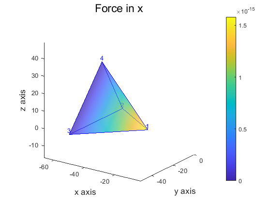
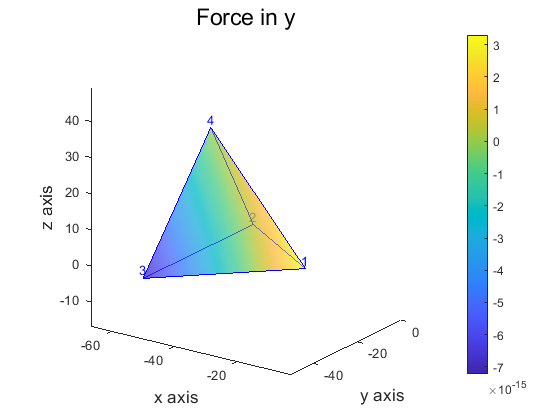
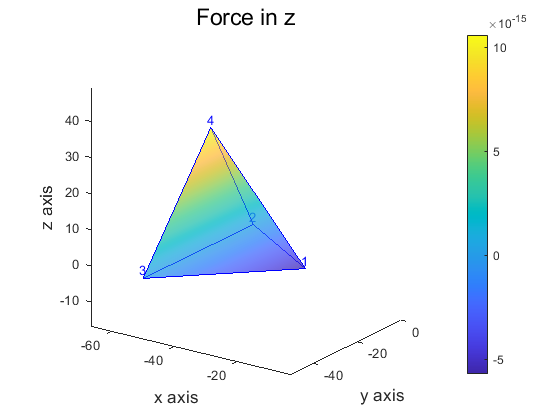
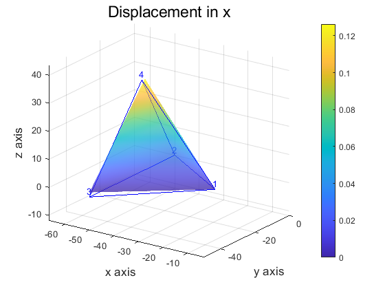
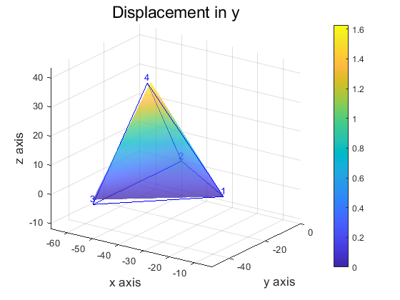
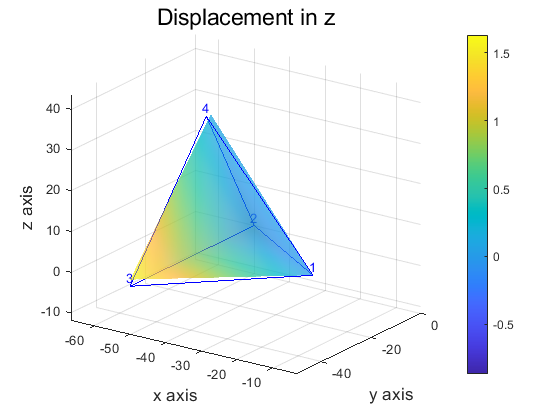

Finite element solution for a single element
Contributed by OuYang,Xiong
Contents
- definte parameters
- define element info
- define numerical integration parameters
- take a numerical integration
- Show K matrix and its eigenvalues
- initialization displacement and force vector
- define constraint point and others
- impose constraints
- define Known displacement and force
- calculate Unknown displacement and force
- Draw displacement distribution and force distribution
definte parameters
material parameters young modulus
E = 10; % poisson's ratio nu = 0.33; % model parameters % dimensionality D = 3; % number of nodes nnde = 4; % order of numerical integration nint = 3; % all degrees of freedom nf = D* nnde;
define element info
coordinates
x = [-0.1968 -0.1969 0
-0.5000 0 0
-0.5000 -0.5000 0
-0.5000 -0.1934 0.3260]*100;
% node number
ix = [1 2 3 4];
define numerical integration parameters
get parameters
SF = GenerateShapeFunction(D,nnde,nint);
% calculate elast tensor
CC = ElastTensor(E,nu);
take a numerical integration
[K, M]=IntKMLoc(SF, CC, x(ix, :));
Show K matrix and its eigenvalues
disp('K = : '); disp(K); disp('eig = : ') disp(eig(K));
K = :
列 1 至 7
132.7552 -0.0000 -0.0000 -80.4762 39.6506 -37.2910 -52.2790
-0.0000 33.6841 0.0000 20.4261 -20.4193 -0.0000 -20.4261
-0.0000 0.0000 33.6841 -19.2105 -0.0000 -20.4193 -12.1178
-80.4762 20.4261 -19.2105 72.1270 -36.4185 34.2512 26.2161
39.6506 -20.4193 -0.0000 -36.4185 72.1511 -34.2625 -3.2321
-37.2910 -0.0000 -20.4193 34.2512 -34.2625 67.9442 22.0310
-52.2790 -20.4261 -12.1178 26.2161 -3.2321 22.0310 37.3332
-39.6506 -13.2648 0.0000 15.9924 -33.8648 15.2650 23.6582
-23.5228 0.0000 -13.2648 21.8246 -2.6149 22.8920 14.0353
-0.0000 0.0000 31.3283 -17.8670 -0.0000 -18.9912 -11.2703
-0.0000 -0.0000 -0.0000 -0.0000 -17.8670 18.9975 0.0000
60.8138 -0.0000 -0.0000 -36.8653 36.8775 -70.4169 -23.9485
列 8 至 12
-39.6506 -23.5228 -0.0000 -0.0000 60.8138
-13.2648 0.0000 0.0000 -0.0000 -0.0000
0.0000 -13.2648 31.3283 -0.0000 -0.0000
15.9924 21.8246 -17.8670 -0.0000 -36.8653
-33.8648 -2.6149 -0.0000 -17.8670 36.8775
15.2650 22.8920 -18.9912 18.9975 -70.4169
23.6582 14.0353 -11.2703 0.0000 -23.9485
58.3999 21.6124 0.0000 -11.2703 -36.8775
21.6124 34.7910 -12.3371 -18.9975 -44.4182
0.0000 -12.3371 29.1373 0.0000 -0.0000
-11.2703 -18.9975 0.0000 29.1373 -0.0000
-36.8775 -44.4182 -0.0000 -0.0000 114.8351
eig = :
1.0e+02 *
3.3650 + 0.0000i
0.9669 + 0.0000i
0.8936 + 0.0000i
0.8568 + 0.0000i
0.5278 + 0.0000i
0.5497 + 0.0000i
0.0000 + 0.0000i
0.0000 - 0.0000i
0.0000 + 0.0000i
-0.0000 + 0.0000i
-0.0000 - 0.0000i
-0.0000 + 0.0000i
initialization displacement and force vector
u = zeros(D*nnde,1); fext = zeros(D*nnde,1);
define constraint point and others
pu2 = [1 2 3 4 8 12]; pu1 = setxor((1:nf), pu2);
impose constraints
u(pu2) = 0;
fext(:) = 0;
% extrude the 4th node a distance
u(12) = 0.1;
define Known displacement and force
u2 = u(pu2); f1 = fext(pu1);
calculate Unknown displacement and force
u(pu1) = K(pu1, pu1) \ (f1 - K(pu1, pu2) * u2); fext(pu2) = K(pu2, :) * u;
警告: 矩阵接近奇异值，或者缩放错误。结果可能不准确。RCOND = 8.950083e-19。
Draw displacement distribution and force distribution
reshape force and displacement matrix
fext0 = reshape(fext,[3,4])'; u0 = reshape(u,[3,4])'; % get the current location of node xu = x+u0; % convert vertex matrix to face matrix fx = VerToFace(x,ix); % difine title ftl ={'Force in x', 'Force in y', 'Force in z'}; % draw all force distribution for i =1:3 figure % draw the frame patch('vertices', x, 'faces', fx, 'facecolor', 'none', 'edgecolor', 'b'); hold on % draw force distribution mypatch(x, fx, 'interp', 'none', fext0(:,i), 0.5, 0,ftl{i},'x axis','y axis','z axis'); view(35,20) colorbar % mark node number gui_label(3, x, fx, 4, 1, ix); end %define title dtl ={'Displacement in x', 'Displacement in y', 'Displacement in z'}; % draw all displacement distribution for i =1:3 figure % draw frame patch('vertices', x, 'faces', fx, 'facecolor', 'none', 'edgecolor', 'b'); hold on % draw displacement distribution mypatch(xu, fx, 'interp', 'none', u0(:,i), 0.5, 1,dtl{i},'x axis','y axis','z axis'); view(35,20) colorbar % mark node number gui_label(3, x, fx, 4, 1, ix); end     